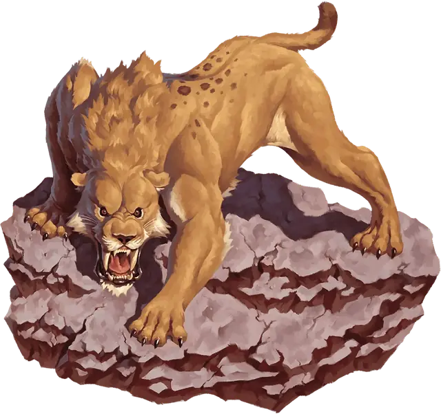

Саблезубый тигр
Saber-Toothed Tiger
Большой Зверь, без мировоззрения

Класс Защиты 13 Инициатива +3 (13)
Хиты 52 (7к10 + 14)
Скорость 40 футов
| мод | спас | ||
|---|---|---|---|
| СИЛ | 18 | +4 | +6 |
| ЛОВ | 17 | +3 | +5 |
| ТЕЛ | 15 | +2 | +2 |
| мод | спас | ||
|---|---|---|---|
| ИНТ | 3 | −4 | −4 |
| МДР | 12 | +1 | +1 |
| ХАР | 8 | −1 | −1 |
Чувства Тёмное зрение 60 футов, пассивное Восприятие 15
Языки нет
Опасность 2 (450 опыта; БВ +2)
Особенности
Прыжок с разбега. После разбега в 10 футов тигр может прыгнуть в длину на расстояние до 25 футов.
Действия
Мультиатака. Тигр совершает две атаки Раздиранием.
Раздирание. Бросок рукопашной атаки: +6, досягаемость 5 фт. Попадание: 11 (2к6 + 4) Рубящего урона.
Бонусные действия
Ловкий побег. Саблезубый тигр совершает действие Затаивание или Отход.
Бонус мастерства +2